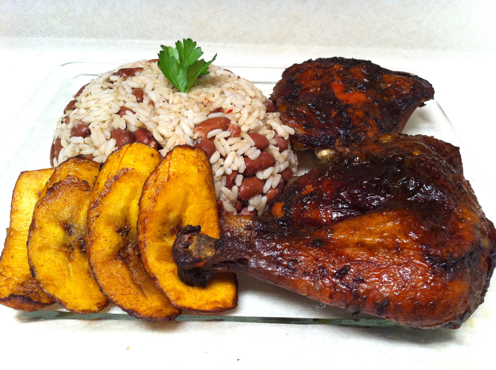

Jerk Chicken
Description
Jerk chicken is marinated in a special blend of spices and seasonings known as "jerk seasoning." The seasoning typically includes ingredients like scotch bonnet peppers, allspice, thyme, garlic, ginger, and other aromatic spices. The chicken is then grilled or smoked over pimento wood or charcoal, which imparts a smoky and charred flavor to the meat. The result is tender and juicy chicken with a crispy exterior and a burst of spicy and smoky goodness.
Served alongside the jerk chicken is a bed of fluffy rice, often cooked with coconut milk and additional spices to complement the bold flavors of the chicken. The rice provides a comforting and neutral base that helps balance the heat of the jerk seasoning.
Ingredients for the jerk chicken:
- 4-6 chicken pieces (bone-in, skin-on thighs or drumsticks are ideal)
- 3-4 scotch bonnet peppers (or use milder peppers for less heat)
- 4 garlic cloves
- 2 green onions (scallions), chopped
- 2 tablespoons soy sauce
- 2 tablespoons vegetable oil
- 1 tablespoon brown sugar
- 1 tablespoon fresh thyme leaves
- 1 tablespoon ground allspice
- 1 teaspoon ground cinnamon
- 1 teaspoon ground nutmeg
- 1 teaspoon ground ginger
- Salt and black pepper to taste
Ingredients for the coconut rice:
- 1 cup long-grain rice
- 1 3/4 cups coconut milk
- 3/4 cup water
- 1 tablespoon vegetable oil
- 1/2 teaspoon salt
Steps
- Prepare the jerk marinade: In a food processor or blender, combine the scotch bonnet peppers, garlic, green onions, soy sauce, vegetable oil, brown sugar, thyme, allspice, cinnamon, nutmeg, ginger, salt, and black pepper. Blend until you have a smooth paste. Taste the marinade and adjust the seasoning to your preference.
- Marinate the chicken: Place the chicken pieces in a large bowl or ziplock bag. Pour the jerk marinade over the chicken and coat each piece thoroughly. Cover the bowl or seal the bag and refrigerate for at least 4 hours or preferably overnight to allow the flavors to penetrate the chicken.
- Prepare the coconut rice: Rinse the rice in cold water until the water runs clear. In a medium saucepan, combine the rinsed rice, coconut milk, water, vegetable oil, and salt. Bring to a boil over medium heat. Once boiling, reduce the heat to low, cover, and let it simmer for about 15-20 minutes or until the rice is cooked and the liquid is absorbed. Fluff the rice with a fork.
- Grill or bake the chicken: Preheat your grill or oven to medium-high heat (about 375°F / 190°C for the oven). If using a grill, oil the grates to prevent sticking. Cook the chicken for about 20-25 minutes, turning occasionally, until the chicken is cooked through and has a charred and crispy exterior. If baking in the oven, arrange the marinated chicken on a baking sheet lined with parchment paper and bake for approximately 30-35 minutes or until fully cooked.
- Serve: Place a portion of the coconut rice on a plate and top it with a generous serving of jerk chicken. Garnish with additional chopped green onions or fresh thyme if desired.
Enjoy the explosion of flavors in this tantalizing jerk chicken and rice dish. The combination of spicy, smoky, and coconut-infused rice will transport you to the sunny beaches of the Caribbean with every bite.